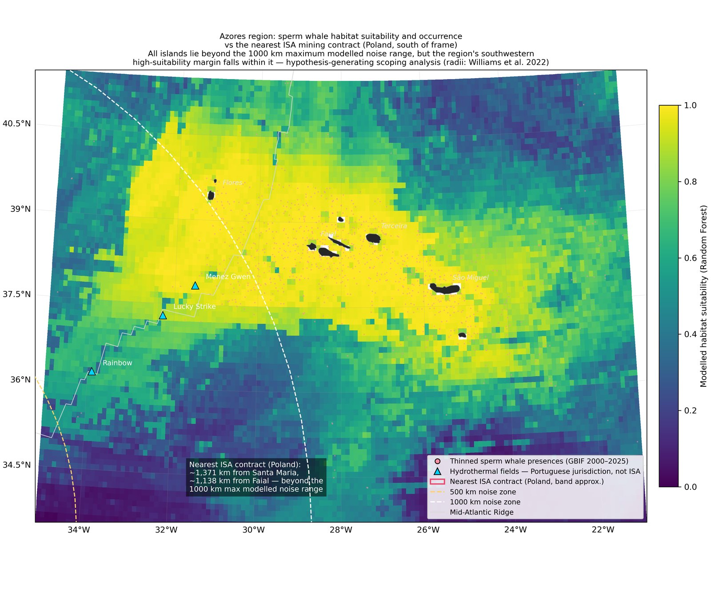

Sperm Whale Foraging Habitat and Deep-Sea Mining Acoustic Risk, North Atlantic
Summer 2026 · Self-directed
Project Overview
A spatially explicit scoping analysis asking where modelled sperm whale (Physeter macrocephalus) foraging habitat in the North Atlantic coincides with the three International Seabed Authority polymetallic sulphide exploration contracts on the Mid-Atlantic Ridge, and where acoustic risk to foraging whales would plausibly be greatest. Habitat suitability was modelled from 71,104 GBIF occurrence records (2000–2025) against depth, sea surface temperature and distance to the ridge axis, then overlaid with the noise-propagation footprints published by Williams et al. 2022 (Science).
The project was built end-to-end as a reproducible Python pipeline with a Google Earth Engine port, and deliberately scoped as hypothesis-generating rather than conclusive. Before any result was accepted it was put through an adversarial verification pass — independent code review, statistical reanalysis, and primary-source fact-checking. That pass overturned the project's original headline finding, which is documented here rather than quietly corrected.
Process
- Framed a hypothesis-generating question from the literature and scoped it honestly as exploratory work, not a claimed discovery.
- Cleaned 71,104 GBIF records to 24,741 through coordinate-quality, date-window, observation-type and duplication filters, then spatially thinned to 3,617 presences to reduce whale-watching effort bias.
- Subjected the whole pipeline to adversarial verification before writing up, and rebuilt it against the findings.
Method
- Random Forest presence / pseudo-absence species distribution model using ETOPO1 bathymetry, NOAA OISST sea surface temperature climatology, and distance to the PB2002 ridge axis.
- Evaluated with five-fold spatial-block cross-validation (AUC 0.923 ± 0.030) and benchmarked against a geography-only null model (AUC 0.910) to quantify how much apparent skill comes from sampling structure rather than habitat signal.
- Contract geometries built from primary sources: France as the exact 100-block ISA coordinate set (parsed area 10,008 km² against the official 10,000 km²), Poland and Russia as ridge bands spanning their published contract extents. Noise radii of 6, 500 and 1,000 km buffered in true-distance projections.

Result
- Verification reversed the draft headline. The French contract, initially placed at the Azores vent fields on inherited coordinates, actually lies at 21–26°N, roughly 1,100–1,700 km further south. The corrected analysis shows minimal overlap: no high-suitability habitat within the 500 km ambient-exceedance zone anywhere in the basin, and 4.2% within the 1,000 km maximum modelled range.
- All nine Azores islands lie 1,017–1,371 km from the nearest ISA contract. The archipelago's hydrothermal vent fields — Lucky Strike, Menez Gwen and Rainbow — are under Portuguese jurisdiction and a statutory mining moratorium to 2050, a jurisdictional distinction routinely conflated in public discussion of mining "near the Azores".
- What remains is a specific, defensible next question rather than a claimed result: about a quarter of the Azores region's high-suitability habitat sits inside the maximum modelled noise range, which is where site-specific acoustic propagation modelling should focus.

Limitations
GBIF occurrence data are opportunistic and dominated by whale-watching effort. Spatial thinning reduces this bias but cannot remove it, and the environmental model exceeds a geography-only null by only a modest margin, so the suitability surface is interpreted as effort-corrected occurrence structure rather than demonstrated habitat preference. Low modelled suitability along the southern ridge partly reflects sparse survey effort in the central gyre, where ridge transect surveys have recorded sperm whales. The noise radii were modelled for Pacific nodule-mining scenarios and are applied here as circular buffers, ignoring bathymetric shadowing and sound-channel ducting. The result is therefore best read as an absence of demonstrated overlap, not a demonstration of absent risk.
Methods & Tools
Data & Sources
Occurrence data: GBIF.org, Physeter macrocephalus, North Atlantic download (May 2026). Bathymetry: ETOPO1, NOAA NCEI. Sea surface temperature: NOAA OISST v2 high-resolution monthly climatology, 1991–2020. Ridge axis: PB2002 plate-boundary model (Bird 2003). Contract geometry: International Seabed Authority public contract documentation. Noise-propagation radii after Williams et al. 2022, Science 377(6602).